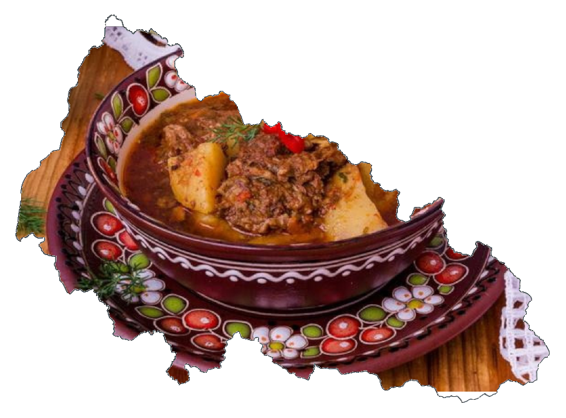
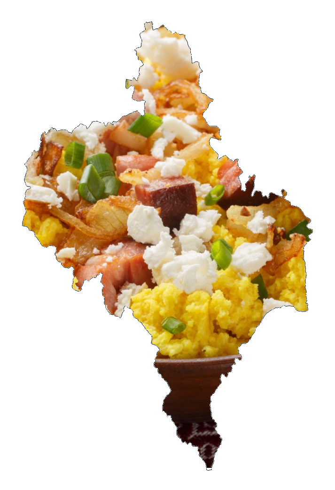
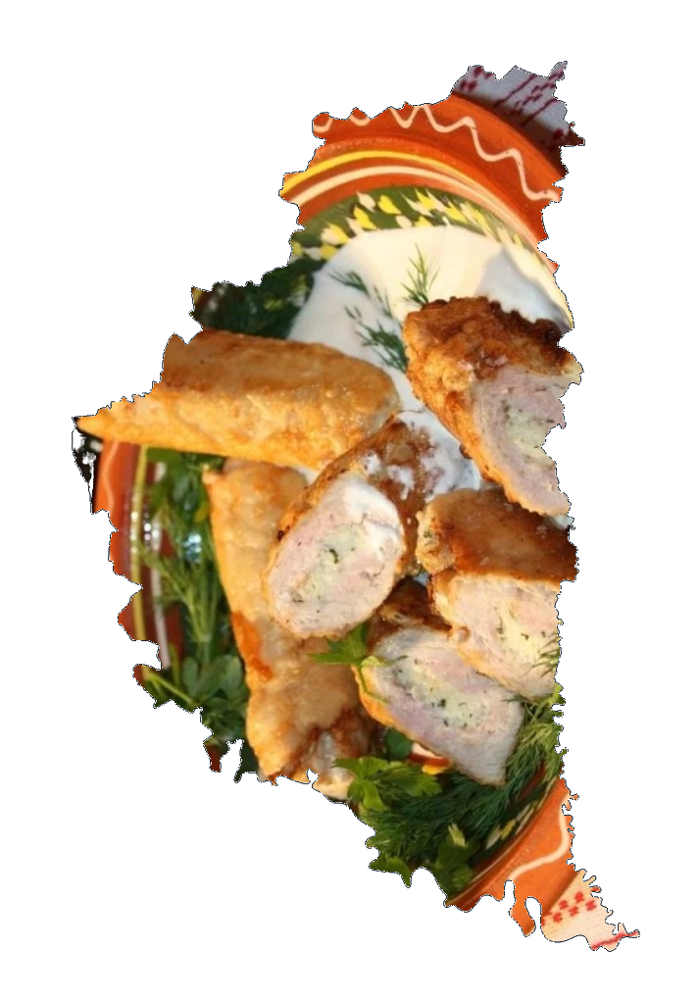
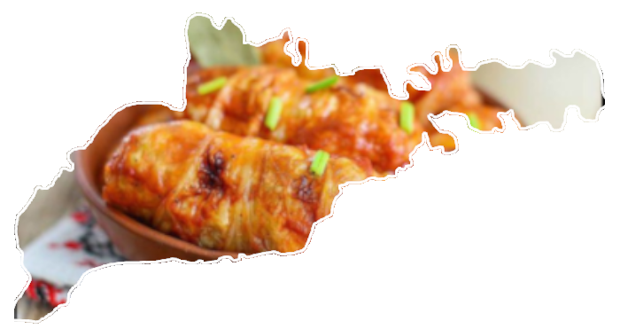
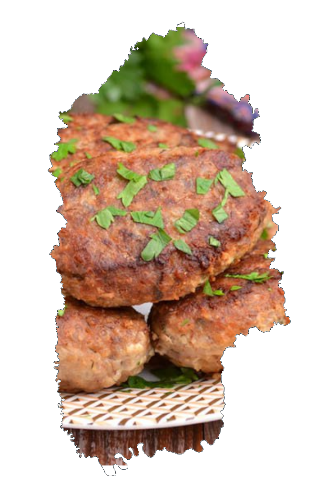
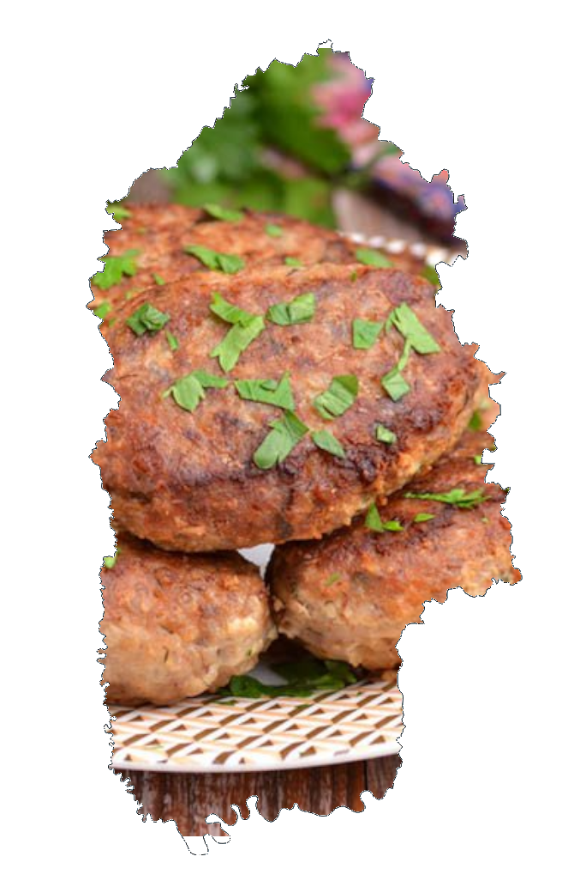
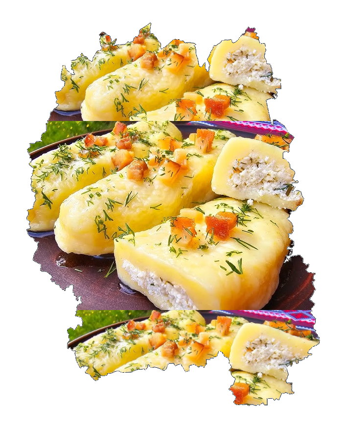
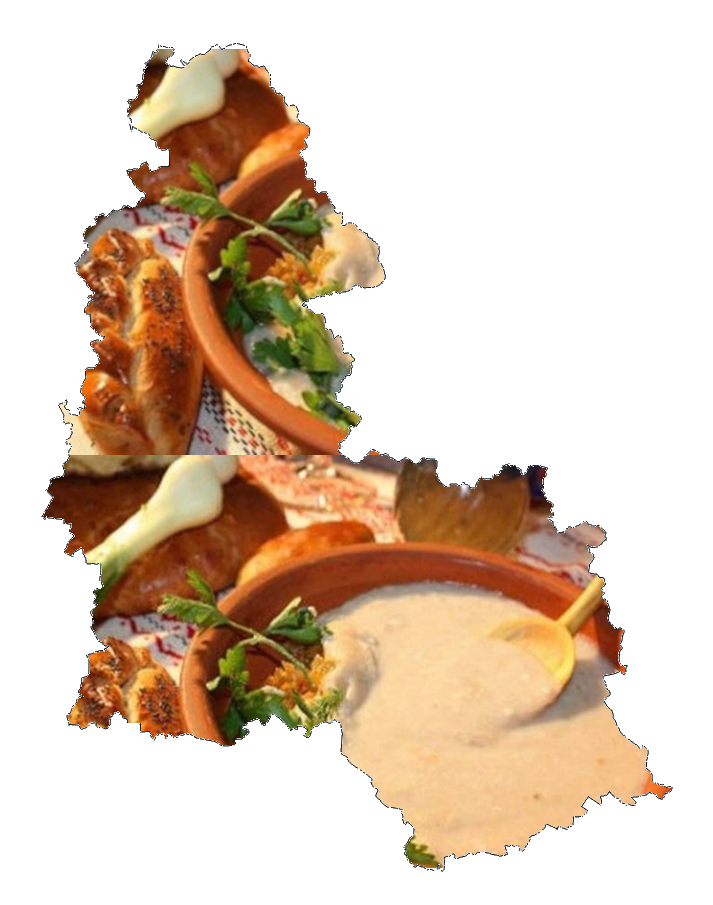
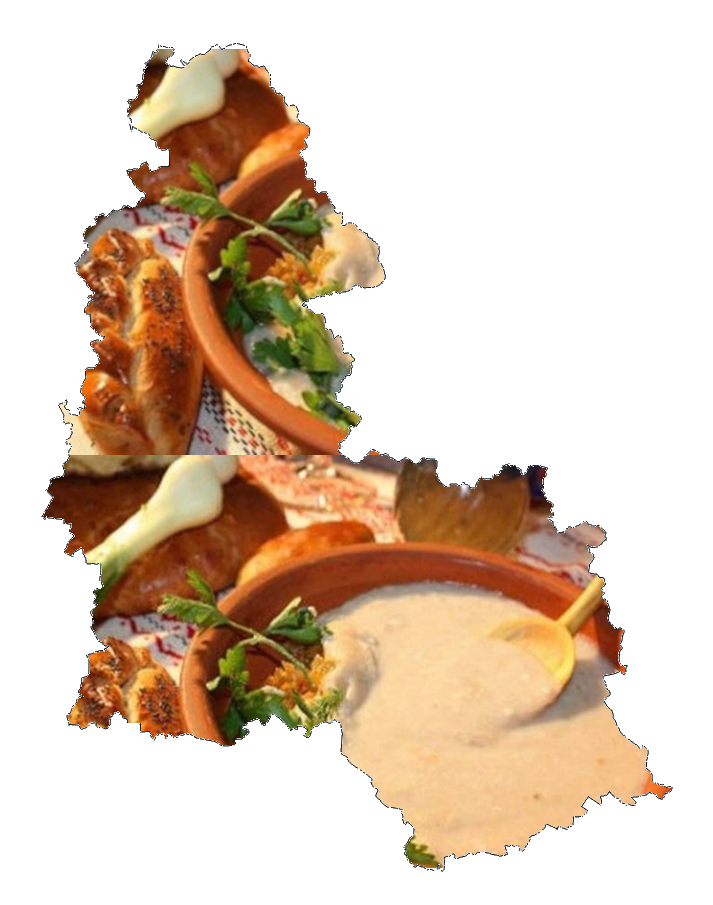

Українська кухня - дивовижна
Найкращі рецепти на всі пори року

🌨 Кутя – головна страва на Різдво, з пшениці, маку, меду та горіхів.
🌨 Вареники з картоплею та грибами – поживна й ароматна страва.
🌨 Буженина – запечене м’ясо, часто подається до святкового столу.
🌨 Гречаники – котлети з гречки та м’яса.
🌨 Пампушки з часником – пухкі булочки до борщу.
Популярні страви кожного регіону
Західна України
    

Південна Україна
 
